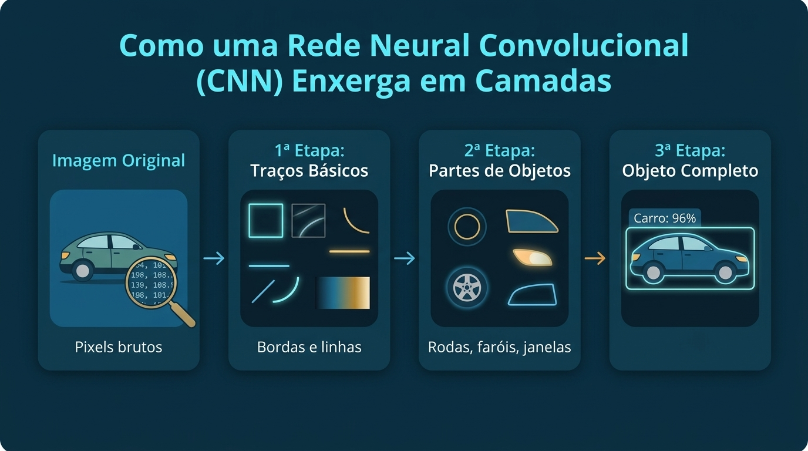
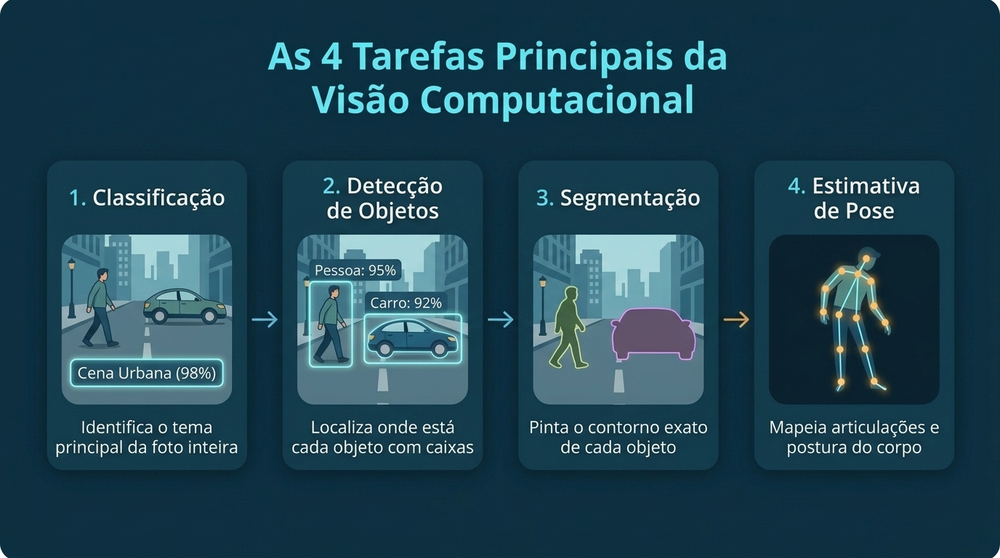
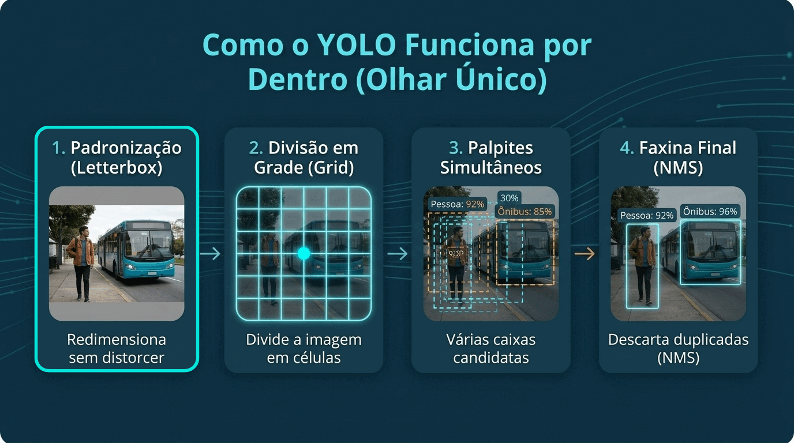

Modelos de Visão Computacional
Modelos de Visão Computacional e YOLO
🛠️ Ferramentas Utilizadas
🧠 1. Dos Filtros Manuais ao Aprendizado Automático
No Dia 01, vimos que uma imagem digital é apenas uma tabela cheia de números (os pixels) e que podemos aplicar filtros manuais para destacar bordas, mudar cores ou borrar uma foto.
Mas pare para pensar: como ensinar o computador a reconhecer um cachorro, um carro ou uma pessoa?
Se tentarmos criar regras manuais (como "se tiver quatro rodas e for vermelho, é um carro"), nosso programa vai falhar rapidamente. Afinal, um carro pode ser azul, estar de frente (onde só vemos duas rodas), estar no escuro ou parcialmente escondido atrás de uma árvore.
Para resolver isso, usamos Redes Neurais Artificiais: em vez de um programador escrever as regras no código, nós mostramos milhares de fotos de exemplo para o computador e ele mesmo aprende a reconhecer os padrões visuais.
Como o computador "enxerga" uma imagem em camadas?
Na Visão Computacional, o tipo de rede neural mais famoso é a Rede Neural Convolucional (ou CNN).
Lembra dos filtros do Dia 01 que deslizavam pela imagem procurando bordas? A CNN usa essa exata mesma ideia, mas com um superpoder: a própria rede descobre sozinha quais filtros deve usar durante o treinamento, construindo o entendimento da imagem em etapas, do mais simples ao mais complexo:

- 1ª Etapa (Traços básicos): As primeiras camadas funcionam como detetives procurando apenas linhas retas, curvas simples e mudanças de cor.
- 2ª Etapa (Partes de objetos): As camadas seguintes juntam esses traços para reconhecer formas menores, como uma roda, uma orelha, uma janela ou um olho.
- 3ª Etapa (O objeto completo): Por fim, as últimas camadas combinam todas essas pistas ("tem rodas + tem faróis + tem formato de veículo") para concluir com alta certeza: é um carro!
🎬 Simulador Animado: Veja uma CNN funcionando por dentro!
Observe na animação interativa abaixo como o Filtro (Kernel) desliza sobre os pixels da imagem calculando o Mapa de Características (Feature Map) e ativando as camadas da rede até identificar o objeto. Você pode pausar, avançar passo a passo, clicar em qualquer célula do mapa ou trocar o filtro!
🎯 2. O que a Visão Computacional consegue fazer?
Dependendo do problema que queremos resolver no mundo real, podemos pedir para o modelo responder a diferentes perguntas sobre uma imagem. Veja as 4 tarefas principais:

- A pergunta: "Qual é o tema principal desta foto?"
- Como funciona: O modelo olha para a imagem inteira e devolve apenas uma etiqueta (classe) geral.
- Exemplo: Dizer se uma foto é de um
gatoou de umcachorro. - Limitação: Se houver três gatos e duas pessoas na mesma foto, a classificação simples não diz onde cada um está nem quantos são.
- A pergunta: "Quais objetos estão na foto e onde está cada um?"
- Como funciona: O modelo desenha um retângulo — chamado de Caixa Delimitadora (Bounding Box) — ao redor de cada objeto encontrado, informando o nome do objeto e a porcentagem de certeza.
- Exemplo: Contar quantas pessoas, carros e semáforos aparecem em uma câmera de trânsito.
- A pergunta: "Qual é o contorno exato de cada objeto?"
- Como funciona: Em vez de apenas desenhar um retângulo ao redor, o modelo pinta exatamente os pixels que pertencem a cada objeto (como se recortasse o objeto com uma tesoura mágica).
- Exemplo: Separar a área exata da pista em carros autônomos ou medir o tamanho exato de uma folha na agricultura.
- A pergunta: "Em que posição está o corpo desta pessoa?"
- Como funciona: O modelo localiza pontos estratégicos do corpo (ombros, cotovelos, mãos, joelhos) e liga esses pontos formando um "esqueleto".
- Exemplo: Analisar se um trabalhador está com a postura correta, acompanhar exercícios físicos ou detectar se um idoso sofreu uma queda.
⚡ 3. O que é o YOLO e por que ele revolucionou a área?
Antigamente, detectar objetos em uma foto era um processo muito lento. Os algoritmos funcionavam como alguém procurando um objeto no escuro com uma lanterna pequena: eles recortavam milhares de pedacinhos da imagem e analisavam um por um ("Tem um carro neste canto? Não. E um pouco mais para o lado? Também não...").
Por causa disso, analisar uma única foto demorava vários segundos — o que tornava impossível usar esses modelos em vídeos ao vivo ou câmeras de segurança.
Em 2016, surgiu o YOLO, sigla para You Only Look Once (em português, "Você Só Olha Uma Vez").
Abordagem Antiga (Duas Etapas - Lenta):
Foto ──► Recorta milhares de pedaços ──► Analisa um por um ──► Resultado (Demorado 🐢)
Abordagem do YOLO (Olhar Único - Tempo Real):
Foto ──► Olha a imagem inteira de uma só vez ──► Resultado Instantâneo (Tempo Real ⚡)O grande diferencial do YOLO é que ele analisa a imagem inteira de uma única vez, conseguindo processar dezenas de quadros por segundo mesmo em computadores comuns ou celulares.
🔍 Como o YOLO funciona por dentro? (Passo a Passo)
Quando entregamos uma imagem para o YOLO, ele executa 4 passos simples e organizados para encontrar todos os objetos:

Passo 1: Padronização da Imagem (Letterbox)
A rede neural do YOLO espera receber imagens sempre de mesmo tamanho (por exemplo, um quadrado de 640x640 pixels). Mas se você enviar uma foto retangular de celular e simplesmente "espremê-la" para virar um quadrado, uma pessoa parecerá achatada ou esticada, confundindo o modelo. Por isso, o YOLO usa uma técnica chamada Letterbox: ele diminui a foto mantendo o formato original dos objetos e preenche o espaço que sobrar nas bordas com faixas cinzas (igual às faixas pretas de um filme na TV).
Passo 2: Divisão em Grade (Grid)
Imagine que o YOLO desenha uma grade invisível sobre a imagem, dividindo a foto em vários quadradinhos (como um tabuleiro de xadrez).
+-------+-------+-------+
| | | | • A imagem é dividida em células (quadradinhos).
+-------+-------+-------+ • O quadradinho onde cai o CENTRO do objeto (●)
| | ● | | fica responsável por dizer:
+-------+-------+-------+ "Aqui tem uma pessoa, e a caixa dela tem este tamanho!"
| | | |
+-------+-------+-------+Detalhe esperto: Para não deixar passar nada, o YOLO cria 3 grades de tamanhos diferentes ao mesmo tempo: uma grade bem miúda para achar objetos pequenos (como um celular ou pássaro longe), uma média para objetos médios (uma pessoa) e uma grade grande para objetos gigantes (um ônibus inteiro na frente da câmera).
Passo 3: Palpites Simultâneos em Cada Quadradinho
Todos os quadradinhos da grade trabalham juntos e ao mesmo tempo. Cada quadradinho onde cai o centro de um objeto entrega um "pacote de informações" contendo:
- Onde está a caixa (Bounding Box): As coordenadas (x, y) de onde a caixa começa e onde termina.
- O que é o objeto (Classe): Se é uma
pessoa, umcarro, umcachorro, umamochila, etc. - Qual a certeza (Confiança): Uma nota de
0%a100%(ou0.0a1.0) indicando o quão seguro o modelo está daquele palpite.
Passo 4: A Faxina Final (Filtro de Confiança + NMS)
Como a grade tem milhares de quadradinhos dando palpites ao mesmo tempo, dois problemas acontecem: muitos quadradinhos dão palpites fracos onde não há nada, e quadradinhos vizinhos acabam desenhando várias caixas repetidas sobre a mesma pessoa.
Para entregar um resultado limpo, o YOLO faz uma faxina automática em duas etapas:
- Filtro de Confiança (Confidence): Definimos uma nota de corte (por exemplo,
40%ou0.40). Qualquer palpite com certeza menor que 40% é descartado na hora. - Eliminação de Caixas Repetidas (NMS — Non-Maximum Suppression): Quando duas ou mais caixas estão sobrepostas em cima do mesmo objeto, o YOLO compara a nota de certeza delas, mantém apenas a melhor caixa e apaga todas as outras repetidas!
Antes da limpeza (NMS): Depois da limpeza (NMS):
┌─────────────┐ ┌─────────────┐
│ ┌───────────┼─┐ │ │
│ │ Pessoa 92%│ │ ──────────────► │ Pessoa 92% │
└─┼───────────┘ │ │ │
└─────────────┘ └─────────────┘
(Caixas repetidas: 92%, 85%, 78%) (Fica apenas a melhor!)📦 O que o YOLO já sabe de fábrica? (Base COCO e Tamanhos)
Você não precisa treinar o YOLO do zero para começar a usar! Os modelos oficiais (como o YOLOv8 e o YOLO11, da biblioteca ultralytics) já vêm pré-treinados em um famoso banco de imagens chamado COCO, o que significa que eles já reconhecem 80 tipos de objetos do dia a dia instantaneamente:
- Pessoas e Acessórios:
person(pessoa),backpack(mochila),umbrella(guarda-chuva),handbag(bolsa),tie(gravata)... - Trânsito e Rua:
car(carro),bus(ônibus),motorcycle(moto),bicycle(bicicleta),truck(caminhão),traffic light(semáforo)... - Animais:
dog(cachorro),cat(gato),bird(pássaro),horse(cavalo)... - Objetos Domésticos e Eletrônicos:
cell phone(celular),laptop(notebook),bottle(garrafa),cup(copo),chair(cadeira),couch(sofá),tv(televisão)...
Além disso, o YOLO é disponibilizado em 5 tamanhos diferentes (indicados pela última letra do nome do arquivo, como yolov8n.pt):
| Sufixo | Tamanho | Velocidade | Precisão | Quando usar? |
|---|---|---|---|---|
n (Nano) |
Super leve | ⚡⚡⚡⚡⚡ | ⭐⭐⭐ | Ideal para aulas, notebooks comuns, celulares e testes rápidos (yolov8n.pt). |
s (Small) |
Pequeno | ⚡⚡⚡⚡ | ⭐⭐⭐⭐ | Bom equilíbrio entre velocidade e precisão em vídeos ao vivo. |
m (Medium) |
Médio | ⚡⚡⚡ | ⭐⭐⭐⭐ | Uso geral quando se tem uma placa de vídeo (GPU) básica. |
l (Large) |
Grande | ⚡⚡ | ⭐⭐⭐⭐⭐ | Cenários com objetos difíceis ou muito pequenos. |
x (Extra Large) |
Pesado | ⚡ | ⭐⭐⭐⭐⭐ | Quando a precisão máxima é mais importante que a velocidade. |
💻 4. Prática: Identificando Objetos em Imagens e Vídeos com YOLO
Chegou a hora de colocar a mão na massa! Vamos usar a biblioteca Ultralytics YOLO junto com o OpenCV para:
- Carregar um modelo YOLO pronto para uso;
- Detectar objetos em uma foto e extrair nome, confiança e posição (base para o nosso Agente Inteligente do Dia 03!);
- Testar Detecção, Segmentação e Pose trocando apenas uma linha de código;
- Processar um vídeo quadro a quadro.
Passo 1: Instalação e Carregamento do Modelo
No Google Colab, instalamos a biblioteca ultralytics e carregamos o modelo yolov8n.pt (a versão Nano, super leve e rápida).
# No Google Colab, descomente a linha abaixo para instalar:
# !pip install -q ultralytics opencv-python matplotlib
import cv2
import matplotlib.pyplot as plt
from ultralytics import YOLO
# Carrega o modelo YOLO pré-treinado (baixa o arquivo automaticamente na 1ª vez)
modelo = YOLO('yolov8n.pt')
print(f'Quantidade de objetos que o modelo conhece: {len(modelo.names)}')
print('Exemplos das 10 primeiras classes:', list(modelo.names.values())[:10])Passo 2: Detectando Objetos e Lendo os Resultados
Vamos passar uma imagem para o modelo, exibir o resultado com as caixas desenhadas e também listar no terminal cada objeto encontrado.
# Podemos passar o caminho de uma foto no computador ou um link da internet (URL)
url_imagem = 'https://ultralytics.com/images/bus.jpg'
# Faz a detecção! O parâmetro conf=0.40 descarta palpites com menos de 40% de certeza
resultados = modelo.predict(source=url_imagem, conf=0.40)
resultado = resultados[0]
# resultado.plot() devolve a imagem com as caixas desenhadas (em BGR, convertemos para RGB)
img_anotada = cv2.cvtColor(resultado.plot(), cv2.COLOR_BGR2RGB)
plt.figure(figsize=(8, 10))
plt.title('Detecção de Objetos com YOLO')
plt.imshow(img_anotada)
plt.axis('off')
plt.show()
# Listando os detalhes de cada caixa encontrada
print('Objetos Detectados ' + '=' * 35)
for caixa in resultado.boxes:
id_classe = int(caixa.cls[0])
nome_classe = resultado.names[id_classe]
confianca = float(caixa.conf[0])
x1, y1, x2, y2 = map(int, caixa.xyxy[0])
print(f'• Objeto: {nome_classe:<10} | Certeza: {confianca:.1%} | Posição: ({x1}, {y1}) até ({x2}, {y2})')Passo 3: Criando uma Função Organizada (Ponte para o Dia 03)
No Dia 03, construiremos um Agente de Visão que tomará decisões automáticas (como enviar um alerta no Telegram quando pessoas entrarem em um local). Para que nosso código Python consiga tomar decisões facilmente, vamos guardar as detecções do YOLO em uma lista simples de dicionários:
def detectar_objetos(caminho_ou_img, limite_confianca=0.5):
"""
Roda o YOLO na imagem e devolve uma lista organizada
com o nome do objeto, a certeza (confiança) e as coordenadas da caixa.
"""
resultados = modelo.predict(source=caminho_ou_img, conf=limite_confianca, verbose=False)
deteccoes = []
for caixa in resultados[0].boxes:
id_cls = int(caixa.cls[0])
deteccoes.append({
'classe': resultados[0].names[id_cls],
'confianca': round(float(caixa.conf[0]), 3),
'coordenadas': [int(v) for v in caixa.xyxy[0]] # [x1, y1, x2, y2]
})
return deteccoes
def contar_objetos(deteccoes, classe_alvo):
"""Conta quantos objetos de um tipo específico (ex: 'person' ou 'bus') foram encontrados."""
return sum(1 for obj in deteccoes if obj['classe'] == classe_alvo)
# Testando nossas funções na prática
lista_detectada = detectar_objetos(url_imagem, limite_confianca=0.5)
total_pessoas = contar_objetos(lista_detectada, 'person')
print(f'Total de objetos encontrados na foto: {len(lista_detectada)}')
print(f'Total de pessoas ("person") na foto: {total_pessoas}')Passo 4: Muito Além de Caixas — Segmentação e Pose
Na biblioteca do YOLO, o mesmo código que você acabou de aprender também serve para recortar o formato exato dos objetos (Segmentação) ou mapear o esqueleto das pessoas (Pose). Basta mudar o final do nome do modelo:
yolov8n.pt→ Detecção (desenha caixas)yolov8n-seg.pt→ Segmentação (pinta o contorno exato de cada objeto)yolov8n-pose.pt→ Pose (marca as articulações do corpo humano)
# Carregando os modelos de Segmentação e de Pose
modelo_seg = YOLO('yolov8n-seg.pt')
modelo_pose = YOLO('yolov8n-pose.pt')
res_seg = modelo_seg.predict(source=url_imagem, conf=0.40, verbose=False)[0]
res_pose = modelo_pose.predict(source=url_imagem, conf=0.40, verbose=False)[0]
# Exibindo os dois resultados lado a lado
fig, ax = plt.subplots(1, 2, figsize=(14, 8))
ax[0].set_title('Segmentação (Contorno Exato)')
ax[0].imshow(cv2.cvtColor(res_seg.plot(), cv2.COLOR_BGR2RGB))
ax[0].axis('off')
ax[1].set_title('Estimativa de Pose (Esqueleto)')
ax[1].imshow(cv2.cvtColor(res_pose.plot(), cv2.COLOR_BGR2RGB))
ax[1].axis('off')
plt.tight_layout()
plt.show()Passo 5: Detectando Objetos em Vídeos
Um vídeo nada mais é do que várias fotos (chamadas de quadros ou frames) mostradas em sequência bem rápido (geralmente 30 fotos por segundo). Para usar o YOLO em um vídeo, basta abrir o arquivo com o OpenCV, passar um quadro de cada vez pelo modelo e salvar o vídeo resultante:
def processar_video_yolo(caminho_entrada, caminho_saida='video_detectado.mp4', max_frames=150):
cap = cv2.VideoCapture(caminho_entrada)
# Descobre a largura, a altura e a velocidade (FPS) do vídeo original
largura = int(cap.get(cv2.CAP_PROP_FRAME_WIDTH))
altura = int(cap.get(cv2.CAP_PROP_FRAME_HEIGHT))
fps = cap.get(cv2.CAP_PROP_FPS) or 30.0
# Prepara o arquivo onde o novo vídeo (com as caixas desenhadas) será salvo
fourcc = cv2.VideoWriter_fourcc(*'mp4v')
saida = cv2.VideoWriter(caminho_saida, fourcc, fps, (largura, altura))
frame_atual = 0
while cap.isOpened() and frame_atual < max_frames:
sucesso, frame_bgr = cap.read()
if not sucesso:
break
# Passa a foto atual (frame) pelo YOLO e desenha as caixas
resultado = modelo.predict(source=frame_bgr, conf=0.40, verbose=False)[0]
frame_anotado = resultado.plot()
saida.write(frame_anotado)
frame_atual += 1
cap.release()
saida.release()
print(f'Pronto! {frame_atual} quadros processados e salvos em: {caminho_saida}')💭 Para ir mais a fundo...
📚 Ferramentas visuais e links úteis
- CNN Explainer — Veja uma Rede Neural Convolucional funcionando por dentro de forma visual e interativa no navegador
- TensorFlow Playground — Simulador interativo para brincar com redes neurais sem precisar programar
- Documentação Oficial da Ultralytics YOLO (em Português)
🤖 Prompts para estudar com Inteligência Artificial
Quer tirar dúvidas ou explorar novos projetos? Copie e cole os prompts abaixo no ChatGPT, Claude ou Gemini:
-
Entendendo redes neurais e filtros com analogias do dia a dia:
"Estou começando a aprender Visão Computacional. Explique, usando analogias simples do cotidiano e sem fórmulas matemáticas, qual é a diferença entre usar um filtro manual de imagem (como no Photoshop ou OpenCV) e usar uma Rede Neural Convolucional (CNN) para reconhecer objetos."
-
Revisando como o YOLO pensa:
"Explique passo a passo para um iniciante como o modelo YOLO consegue detectar vários objetos em uma imagem de uma só vez. Use exemplos simples para explicar o que é a divisão em grade (grid), o filtro de confiança (confidence) e por que ele precisa remover caixas repetidas (NMS) no final."
-
Treinando o YOLO para reconhecer novos objetos (Personalização):
"Já sei usar o YOLO pré-treinado em Python para detectar pessoas e carros. Agora quero ensinar o YOLO a reconhecer um objeto específico do meu projeto (por exemplo, capacetes de segurança ou placas de trânsito). Explique de forma simples e passo a passo como funciona esse processo: quantas fotos preciso tirar, como marcar os objetos nas fotos usando ferramentas gratuitas e como rodar o treinamento no Google Colab."